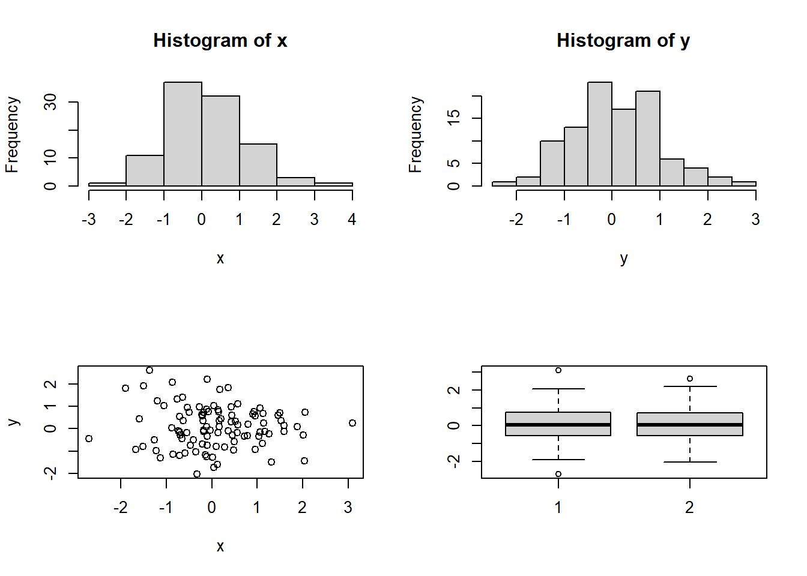

Chapter 6 Review (Chapter 1-5)
6.1 Simulation
Basic vectorized comparison
X <- c(1, 1, 5)
Y <- c(5, 5, 1)
X > Y # FALSE FALSE TRUE
## [1] FALSE FALSE TRUE
sum(X > Y) # TRUE = 1, FALSE = 0
## [1] 1
mean(X > Y) # 1/3
## [1] 0.3333333The code mean(X > Y) is computing
\[\begin{equation*}
\frac{1}{3}( I(X_1 > Y_1) + I(X_2 > Y_2) + I(X_3 > Y_3)),
\end{equation*}\]
where \(I(\cdot)\) is the indicator function, that is, \(I(X_1 > Y_1) = 1\) if \(X_1 > Y_1\) and \(I(X_1 > Y_1) = 0\) if \(X_1 \leq Y_1\).
Example: Let \(X \sim N(mean = 0, sd = 2)\) and \(Y \sim Exp(rate = 3)\). Estimate \(P(X > Y)\) using simulation.
The code mean(X > Y) is computing
\[\begin{equation*}
\frac{1}{n} \sum^n_{i=1} I(X_i > Y_i),
\end{equation*}\]
which is an approximation of \(P(X>Y)\).
Theory
Why the sample mean \(\frac{1}{n} \sum^n_{i=1} I(X_i > Y_i)\) approximates the required probability \(P(X>Y)\)?
Recall the strong law of large numbers (SLLN): Let \(X_1,\ldots,X_n\) be independent and identically distributed random variables with mean \(\mu:=E(X)\). Let \(\overline{X}_n:= \frac{1}{n} \sum^n_{i=1}X_i\). Then
\[\overline{X}_n \stackrel{a.s.}{\rightarrow} \mu.\]
Note: a.s. means almost surely (probability = 1). The above convergence means \(P(\lim_{n\rightarrow \infty} \overline{X}_n = \mu) = 1\). Note that (the expectation of an indicator random variable is the probability that the corresponding event will happen)
\[ P(X>Y) = E(I(X>Y)).\]
To apply SLLN, we just need to recognize the underlying random variable is \(I(X>Y)\) (which follows a Bernoulli distribution with parameter \(P(X>Y)\)). Then, with probability \(1\), the sample mean
\[ \frac{1}{n} \sum^n_{i=1} I(X_i > Y_i) \rightarrow P(X>Y).\]
The quantity on the LHS is what we compute in mean(X > Y) (note that we are using vectorized comparison). This is the reason why we can use mean(X > Y) to estimate \(P(X>Y)\).
Ex 1: Let X ~ N(mean = 2, sd =1), Y ~ Exp(rate = 2), Z ~ Unif(0, 4) (continuous uniform distribution on [0,4]). Estimate \(P(\max(X,Y)>Z)\).
Recall the difference between pmax and max:
# always try with simple examples when you test the usage of functions
x <- c(1, 2, 3)
y <- c(0, 5, 10)
max(x, y)
## [1] 10
pmax(x, y)
## [1] 1 5 10n <- 100000
x <- rnorm(n, 2, 1)
y <- rexp(n, 2)
z <- runif(n, 0, 4)
mean(pmax(x, y) > z)
## [1] 0.51502Ex 2 Let X ~ N(mean = 2, sd = 1), Y ~ Exp(rate = 2), Z ~ Unif(0, 4) (continuous uniform distribution on [0,4]). Estimate \(P(\min(X,Y)>Z)\).
n <- 100000
x <- rnorm(n, 2, 1)
y <- rexp(n, 2)
z <- runif(n, 0, 4)
mean(pmin(x, y) > z) # what is the difference between pmin and min?
## [1] 0.11361Ex 3 Let X ~ N(mean = 2, sd = 1), Y ~ Exp(rate = 2), Z ~ Unif(0, 4) (continuous uniform distribution on [0,4]). Estimate \(P(X^2 Y>Z)\).
n <- 100000
x <- rnorm(n, 2, 1)
y <- rexp(n, 2)
z <- runif(n, 0, 4)
mean(x ^ 2 * y > z)
## [1] 0.41158Ex 4 Person \(A\) generates a random variable \(X \sim N(2, 1)\) and Person \(B\) generates a random variable \(Z \sim Unif(0, 4)\). If \(X < Z\), Person \(A\) will discard \(X\) and generate another random variable \(Y \sim Exp(0.5)\). Find the probability that the number generated by \(A\) is greater than that by \(B\).
n <- 100000
greater <- rep(0, n)
for (i in 1:n) {
X <- rnorm(1, 2, 1)
Z <- runif(1, 0, 4)
if (X< Z) {
Y <- rexp(1, rate = 0.5)
greater[i] <- Y > Z
} else {
greater[i] <- 1 # 1 means A's no > B's no
}
}
mean(greater)
## [1] 0.63698Remark: you may find that the following code gives you almost the same answer. Why?
n <- 100000
x <- rnorm(n, 2, 1)
y <- rexp(n, 0.5)
z <- runif(n, 0, 4)
mean(pmax(x, y) > z)
## [1] 0.63904Ex 5 Let X ~ N(mean = 2, sd = 1) and Y ~ Exp(rate = 2). Estimate \(E(min(X,Y))\).
The code mean(pmin(x, y)) computes
\[\begin{equation*}
\frac{1}{n} \sum^n_{i=1} \min(X_i, Y_i),
\end{equation*}\]
which approximates \(E(\min(X,Y))\) by the SLLN.
6.2 Matrix
Ex6: Write a function called matrix_times_vector to compute \(X Y\), where \(X\) is a matrix and \(Y\) is a vector. The output should be a vector.
matrix_times_vector = function(X, Y) {
as.vector(X %*% Y)
}
# e.g.
X <- matrix(1:12, 3, 4)
Y <- 1:4
X
## [,1] [,2] [,3] [,4]
## [1,] 1 4 7 10
## [2,] 2 5 8 11
## [3,] 3 6 9 12
Y
## [1] 1 2 3 4
matrix_times_vector(X, Y)
## [1] 70 80 90Note:
X %*% Ywill return a matrix. We can useas.vectorto change it into a vector.- It is common to see the error
non-conformable arguments. This is because the dimensions of your matrices/vectors do not match.
- If you have a \(n\times p\) matrix \(A\) and \(m \times q\) matrix \(B\), you can do the matrix multiplication \(AB\) only if \(p = m\). In R, if this is not the case, there will be an error.
- Similarly, if you have a vector \(d\) of length \(m\). You can do the matrix multiplication \(A d\) only if \(p = m\).
Ex7: Write a function called matrix_times_vector2 to compute \(X Y\), where \(X\) is a matrix and \(Y\) is a vector. The output should be a vector. However, you should check if the dimensions of the inputs are appropriate before you perform the calculation. Display an error message The dimensions do not match if this is not the case.
matrix_times_vector2 = function(X, Y) {
p <- ncol(X)
m <- length(Y)
if (p == m) {
return(as.vector(X %*% Y))
} else {
cat("The dimensions do not match")
}
}
# e.g.
X <- matrix(1:12, 4, 3)
Y <- 1:4
matrix_times_vector2(X, Y)
## The dimensions do not match
X <- matrix(1:12, 3, 4)
Y <- 1:4
matrix_times_vector2(X, Y)
## [1] 70 80 90Example: if A is matrix and x is a vector, you can find the sums of the elements in A and x by sum(A) and sum(x) respectively.
Ex 8:
Find \(\sum^{5}_{x=1}\sum^{4}_{y=1} \frac{x}{x+y}\) without any loops.
(x <- matrix(1:5, nrow = 4, ncol = 5, byrow = TRUE)) # define and display at the same time using (...)
## [,1] [,2] [,3] [,4] [,5]
## [1,] 1 2 3 4 5
## [2,] 1 2 3 4 5
## [3,] 1 2 3 4 5
## [4,] 1 2 3 4 5
(y <- matrix(1:4, nrow = 4, ncol = 5, byrow = FALSE))
## [,1] [,2] [,3] [,4] [,5]
## [1,] 1 1 1 1 1
## [2,] 2 2 2 2 2
## [3,] 3 3 3 3 3
## [4,] 4 4 4 4 4
x / (x + y) # vectorized operation
## [,1] [,2] [,3] [,4] [,5]
## [1,] 0.5000000 0.6666667 0.7500000 0.8000000 0.8333333
## [2,] 0.3333333 0.5000000 0.6000000 0.6666667 0.7142857
## [3,] 0.2500000 0.4000000 0.5000000 0.5714286 0.6250000
## [4,] 0.2000000 0.3333333 0.4285714 0.5000000 0.5555556
sum(x / (x + y))
## [1] 10.728176.3 Basic Operation
Example Let v be a vector of integers. Write a one-line R code to compute the product of all the even integers in v.
To illustrate how to solve the question step by step:
v <- -10:10 # begin writing your code by setting some integers
v %% 2 # find the remainder, if the remainder is 0, it is an even number
## [1] 0 1 0 1 0 1 0 1 0 1 0 1 0 1 0 1 0 1 0 1 0
v %% 2 == 0 # check which elements is 0
## [1] TRUE FALSE TRUE FALSE TRUE FALSE TRUE FALSE TRUE FALSE TRUE FALSE TRUE
## [14] FALSE TRUE FALSE TRUE FALSE TRUE FALSE TRUE
v[v %% 2 == 0] # select the elements which are "TRUE"
## [1] -10 -8 -6 -4 -2 0 2 4 6 8 10
prod(v[v %% 2 == 0]) # find the product
## [1] 0
# the result is 0. v may not be a good example to check if the code is correct
# let's change to some other vector
v <- 2:8
prod(v[v %% 2 == 0])
## [1] 384
2 * 4 * 6 * 8 #check
## [1] 384
# now, the final answer is prod(v[v %% 2 == 0])Ex 9a: Given that x = 1:100. Write a one-line R code to copmute
\[\begin{equation*}
S := 1^2 - 2^2 + 3^2 - \ldots + 99^2 - 100^2.
\end{equation*}\]
Ex 9b (optional) Can you do Ex 9a without any program or calculator?
Ex 10: Write a function with inputs n and p to compute
\[\begin{equation*}
S(n, p) := 1^p - 2^p + 3^p -\ldots + (-1)^{n} (n-1)^p + (-1)^{n+1} n^p.
\end{equation*}\]
6.4 Some basic plots in R
Example
Write a function called my_summary_plot with input being two numeric vectors x,y and outputs a \(2 \times 2\) multi-frame plot with (i) histogram of x, (ii) histogram of y, (iii) scatter plot of y versu x, and (iv) boxplots of x and y.
# when you write a function, you can begin with some sample x and y
x <- rnorm(100, 0, 1)
y <- rnorm(100, 0, 1)
par(mfrow = c(2, 2))
hist(x)
hist(y)
plot(x, y)
boxplot(x, y)
# after that, you wrap the code into a function without defining x, y
my_summary_plot <- function(x, y){
par(mfrow = c(2, 2))
hist(x)
hist(y)
plot(x, y)
boxplot(x, y)
}
# after you write the function, you should try if it will work or not
rm(list = ls()) # let's remove everything in the memory
my_summary_plot <- function(x, y){
par(mfrow = c(2, 2))
hist(x)
hist(y)
plot(x, y)
boxplot(x, y)
}
x <- rnorm(100, 0, 1)
y <- rnorm(100, 0, 1)
my_summary_plot(x, y)